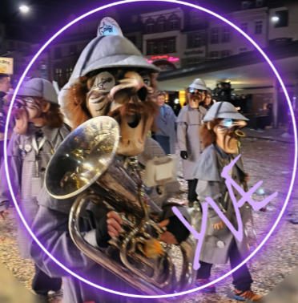

Galerie


Informationen über Vince und seine Erfahrungen bei der Basler Fasnacht.
Informationen über Yve und ihre Erfahrungen bei der Basler Fasnacht.
Informationen über Enea und seine Erfahrungen bei der Basler Fasnacht.
Informationen über Nevio und seine Erfahrungen bei der Basler Fasnacht.
Informationen über Andy und seine Erfahrungen bei der Basler Fasnacht.
Die Basler Fasnacht hat eine lange und reiche Geschichte, die bis ins 14. Jahrhundert zurückreicht. Sie ist eine der ältesten und bekanntesten Fasnachtsveranstaltungen der Welt und findet jedes Jahr in der Stadt Basel, Schweiz, statt. Die Ursprünge der Basler Fasnacht sind eng mit religiösen und politischen Traditionen verbunden und haben sich im Laufe der Jahrhunderte weiterentwickelt.
Während der Basler Fasnacht werden die Straßen von Baslerinnen und Baselern, die als "Cliques" und "Guggenmusiken" organisiert sind, bevölkert. Sie tragen kunstvolle Kostüme und Masken und führen Umzüge, musikalische Darbietungen und traditionelle Tänze auf. Die Fasnacht dauert drei Tage lang und kulminiert am Morgestraich, dem frühen Morgen des Schmutzigen Donnerstags, wenn die Lichter in der Stadt ausgehen und die Fasnachtsmusik beginnt.
Die Basler Fasnacht ist ein wichtiges kulturelles Ereignis für die Stadt Basel und zieht jedes Jahr Tausende von Besuchern aus der ganzen Welt an.